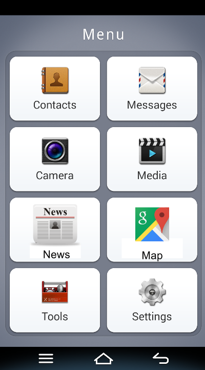
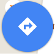
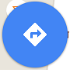
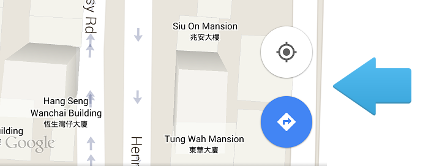
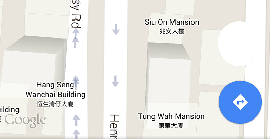

About the Prototyping
- The News app by Qian Tu
- Google map tutorial
Many elderly stays active in their golden age. They would like to explore new place around without assistance from their family members. Elderly owning smartphones seldom use the map app to search location by themselves. Some of them still follow a hand drawn map when going to somewhere they have never been there. This map tutorial is an interactive webpage teaching elderly how to use Google Map on android. User will be assigned to complete a task of searching location and the route to the destination on map. The map app on iOS works similar to the Google map in android. iOS users can learn the basic location searching function with this exercise as well.
Most elderly prefer large icons and text as they may have bad sight. As the target user are those who never use Google Map before, the following features are considered according to the need of target user:
Large icons, simple layout on homemenu
Verbal step-by-step instructions on how to control the application.
The given instruction clearly defines the action user should take on each step, e.g. tap an icon, scroll the screen
An obvious indicator will provide hints on the control action in each step, such as moving up arrow as scrolling
 , pointing to icons/input user should tap.

, pointing to icons/input user should tap.

The distance between starting point and destination in the given task is neither too far away (e.g. Yuen Long to Kowloon) nor too close (e.g. two buildings at the same street) to simplify the task complexity. Specify precisely the starting point and destination to prevent confusion
init scene: the home menu with the map app shortcut. User taps the shortcut to launch the map view. After the map app launches, the phone starts to speak.
Phone: You are now at the Wan Chai MTR exit. You are looking for the way to Lockhart Road Municipal Services Building. In this Google Map exercise, you will learn how to search the location and find the path to your destination from your current location. Please find your destination ‘Lockhart Road Municipal Services Building’ on the map. Scroll down the map until the building is on the map.
-
(User scrolls on the map until the destination is on the screen. A big arrow pointing to the route icon appears)
Phone: Please tap the route icon to start searching.
-
(User taps on the route icon.)
Phone: Look at the input box at the top. Let me know your destination.
-
The keyboard appears asking user to enter the destination. The big arrow points to ‘Choose on map’.
Phone: Tap ‘Choose on map’. Move the screen until the pin is on your destination.
-
(User tap both control.) A blue dialogue appears at the top with destination set to the building. A keyboard appears asking users to enter the starting point. The big arrow now points to ‘Your current location’.
Phone: Please choose ‘Your current location’.
-
(User taps ‘Your current location’. The starting point is set to MTR exit. The big arrow points to the walk icon.
Phone: Please choose the way on foot and start your navigation.
-
(User taps on the walk icon). The big arrows points to ‘Start navigation’.
Phone: Now choose ‘start navigation’.
-
The path on foot draws on the map with a red dot at the destination. The big arrow points to the red dot.
Phone: This is the destination you set and your path.
-
The map move until starting point is on the screen. A blinking arrow on top is shown on top of the starting point.
Phone: The blinking arrow is your position. It will change the direction and move with you as well.
-
The big arrow moves from the starting point along the path.
Phone: Make sure you stay on your path until reaching your destination.
-
The screen switches to the destination with the big arrow moves along the path. The big arrow stops at the destination.
Phone: "Congratulation! You have completed this map exercise".
- Persona:
- John, a 65 years old forgetful man. Smartphone user at beginner level. Never use google map before.
- Difficulties:
- When he taps on the starting point and destination input, the keyboard appears asking users to type the name of places on screen. But his bold fingers can barely type on those small keys of the virtual keyboard.
- Solution:
- Tell users to choose the destination on map. Use their current location as the starting point.
- Difficulties:
- In the beginning of the tutorial, he cannot understand the instruction and scroll until destination is shown on the map. He has no idea where is the route icon, pin as he does not know what they look like.
- Solution:
- Use a big arrow to assist users throughout the exercise. When users are asked to scroll on the map, the arrow moving down will appear with the map. The arrow will also point to the destination building and icons shown on the screen.
- Difficulties:
- The route appears on the map with a blinking arrow along the path. When he moves around the direction of the blinking changes as well. He has no idea what happens on the screen.
- Solution:
- Explain the meaning of the blinking arrow, i.e. his position and what will happen when he moves. Use an arrow moving along the path to tell him how to follow the route to the destination.
Testers felt lost after hearing the verbal instruction at the first time. They could understand the instruction only if it was repeated for at least twice. They thought the verbal instructions were too abstract without seeing the script. They preferred the script presented together with the map view.
When the big arrow pointing to icons or input boxes, testers did not understand they were actually control of the map app. They simply guessed they should tap those places to continue the exercise. Testers revealed that the given instruction did not explain the arrow was pointing to a control and what would happen when they tap on those icons.
Testers were confused when the app does not respond to their wrong input. They guessed it was an error when the tutorial repeated the instruction. Tester would like to seek help from the tutorial but it did not provide any information to fix the error.
The original design only accepted one valid control action. When entering the starting point testers tried to use to voice input by tapping on the microphone icon. However, the tutorial repeated the instructions instead. They felt disappointed since this was a valid action for the actual map app. The tutorial did not provide the following alternatives:
- step 2: adjust the power/ tap anywhere on the instead of scroll the map view.
- step 5-6: users speak on the input instead of follow the blue arrow to tap the starting and ending point.
- step 7: choose take transport/driving instead of walking
The original design forgot to include the return/home control to switch between two tasks. It also lacks the back function to repeat previous steps.
The original design did not show the progression of the exercise, i.e. how many step has been gone through/left before finish.
Never put too much assumption on user. The original design assumes target users with poor sight cannot read instructions on screen and provide narrative instruction only. However, this assumption not always hold in real situation. It is possible for user to access the tutorial with a larger screen. Compare to a text paragraph along the map, narrative instruction is more abstract as it is not perceivable after finished. On the other hand, user can always perceive the text paragraph and they feel more secure to continue the tutorial. Moreover, users who cannot understand the instruction can follow the text paragraph instead. The original design also lack of repeat control for those who cannot understand narrative instruction at once.
Potential revision: provide instruction as paragraph along the map image. User can choose to turn on the textual instruction or not. Allow user to repeat instruction or go back to previous steps so that they can review the steps anytime.
Provide consistent instruction on the correct action. The big arrow is confusing to indicate both scrolling and tapping action. In real user testing testers assumed the arrow always indicating scrolling action as the first time it was shown on the screen. When the arrow told them to tap on an icon later, testers scrolled on the map in the same direction pointed by the arrow instead. Target users should have no experience on the map app before. They do not know which icons on the screen is clickable or valid control on the map view. Inconsistent use of the arrow would only mislead user to take wrong actions as no one assumes it is pointing to a clickable icon.
Potential revision: Use intuitive icons to indicate different control method [tap /scroll ]. They provide perceived affordance for actions should be taken and expected response of the map 1 Enclose the controllable area with thick border frame. The frame provide constraint to restrict user from tapping somewhere outside controllable area.
Provide feedback when receiving invalid action. The original design does not tell users result of their actions and reason for not accepting an invalid input. Testers revealed they thought an error occurred instead of they made a mistake when there was no response. Even if they tapped on the right place, they did not understand the purpose of their purpose. They simply followed the arrow to complete the task. The testing exercise failed to teach testers how to determine between valid and invalid actions. In order to achieve the teaching goal of the tutorial design, informative feedback should be given to let users understand the reason for not accepting their actions and learn by mistakes. As the informative feedback allows user to learn proper control methods, they would not make the same mistakes when using the actual map app.
Potential revision: Explicitly show the error of invalid action and direct users to the correct icon. e.g. ‘Oops! You just hit a wrong place. Do not worry. Follow the arrow to find the icon!’. If user fail to tap on the right control after certain time, repeat the instructions with encouragement to refresh their memories.
Hide controls not involved in the exercise. Testers were distracted when all available controls were shown on the map view. Sometimes they tapped on the control near the correct control. They found the arrow was too large to indicate controls close to each other at the same time. Progressive disclosure2 should be considered when designing the interface. This is a design For beginner user, the map view should show only those mentioned in the exercise to prevent confusion. Advanced functions such as app setting should be disclosed to more skillful users or until users obtain basic understanding on the application behavior. More complicated tasks can also be designed to them for introducing the advanced functions.
Ambiguous indication
Hide location setting icon
Potential revision: Prepare separate tasks for teaching more skillful users. List the exercise objectives on the page as well as the beginning of each exercise to inform users skills they are going to learn. This information allows users to choose exercise fulfilling their learning target.
Revised Prototype Demo Storyboard
- ‘Perceived affordance’ is introduced by Don Norman in his book Just Noticeable Difference. A visual object carries perceived affordance when user can perceive meaningful, useful action can be taken on that object with a known outcome.
- ‘Progressive disclosure’ is an interface design technique to showing core and secondary features separately. The application should provide access from primary to the secondary disclosure levels interfaces via a clearly spot control. Common examples are the advanced application setting and full specification on a product page. See Jakob Nielsen (2006), ‘Progressive Disclosure’, http://www.nngroup.com/articles/progressive-disclosure/.